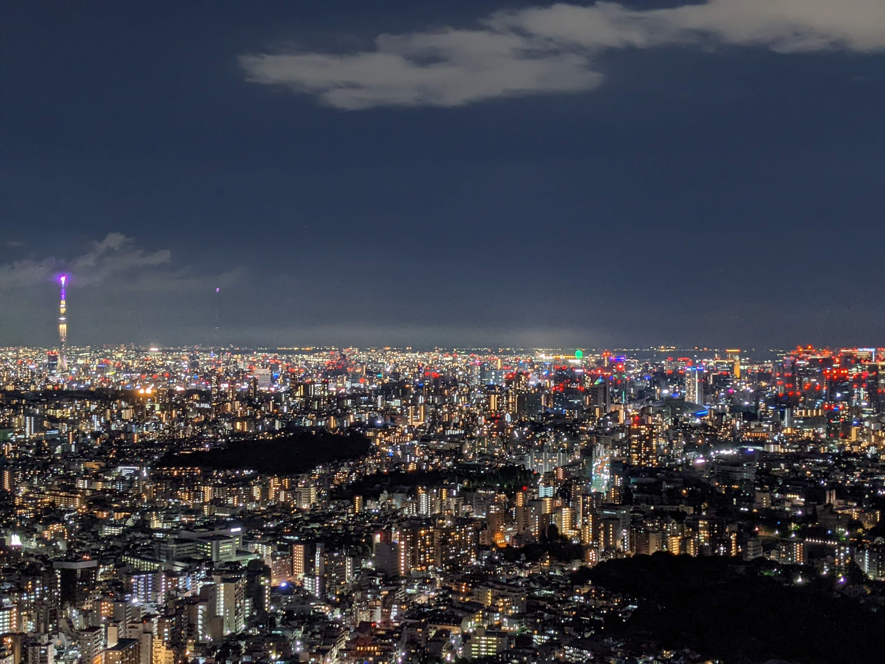

About

Okubo Shun
- 28歳 鹿児島県出身
- SE兼プログラマーとしてフリーランスで活動
- 趣味は筋トレと観光地巡り
- 海外で活躍できるエンジニアになることが目標
Hobby

筋トレが趣味で、毎日ジムに通っています。健康を維持することが目的で始めた筋トレが趣味になりました。大会に出れるように努力したいと思います。
鹿児島県東部の大隅半島（鹿児島県南大隅町）にある雄川の滝です。鹿児島に長く住んでいながら、ゴールデンウイークに初めて行きました。とても大きく迫力のある滝ですが、勢いよく水が流れているわけではありません。とても不思議な雰囲気を感じました。


大阪の通天閣です。大学生の時は大阪のキャンパスに通っていました。遊ぶところがたくさんあり、気さくな人が多い大阪が好きです。
Works

フリーランスのエンジニアとして活動しています。これまでのエンジニアとしての経験は、AccessVBAによる営業管理ツールの改修、ExcelVBAによる帳票出力システムの開発、C++による画像処理アプリケーションの開発、Cを用いたスマートウォッチの開発, etc.があります。
今は、WEBのフロントエンド、バックエンド開発のスキルを習得中です。エンジニアとしての領域を広げていきたいと考えています。
海外で活躍できるエンジニアを目標に頑張ります。